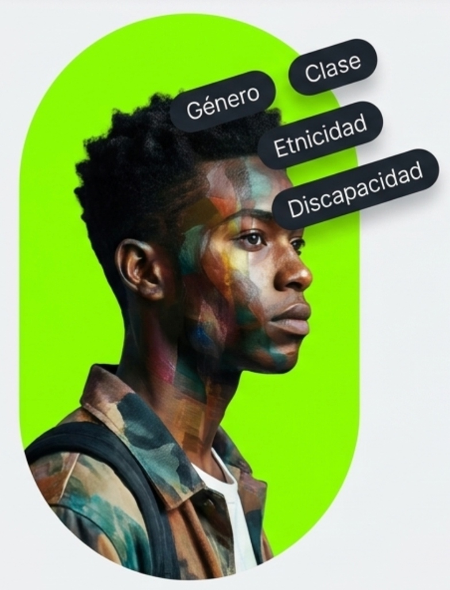

Retroalimentación y Justicia Epistémica Educativa
Transformación estructural del paradigma evaluativo
Progreso Continuo
Derecho fundamental a una educación de calidad orientada al progreso continuo de las potencialidades del educando (Ley 20.370, 2009, Art. 3).
Sujeto Epistémico Activo
Restitución de la potestad participativa: derecho inalienable a emitir juicios de valor propios respecto de su proceso cognitivo (Organización de las Naciones Unidas [ONU], 1989, Art. 12).
Protección Psíquica
Salvaguarda constitucional frente a la indefensión aprendida y dinámicas evaluativas coactivas (Constitución Política de la República, 1980, Art. 19 N° 1).
Sustento: Ley 20.370 (LGE, Art. 3).
Por qué SÍ: Transición de sanción numérica a orientación de progreso.
Inclusión & Equidad
-
01
Mandato de Diversificación Implementación sistemática del Diseño Universal para el Aprendizaje (DUA) (Decreto 83, 2015).
-
02
Ajustes Razonables Garantía de equidad mediante la remoción activa y mitigación de barreras (Ley 20.422, 2010; Ley 20.845, 2015).

Capa Teórica
Abordar la interseccionalidad (Bešić, 2020) para desarticular la violencia simbólica (Bourdieu & Passeron, 1977).
El andamiaje de la Autorregulación (Zimmerman, 2008).
Paso 1: Seguridad Relacional
Pre-requisito fundamental. Contención Psicosocial. Prevención de violencia internalizada. Imposible autoevaluarse de forma justa sin confianza mutua.
Paso 2: Problematización
Diálogo de Poder (Freire, 1970). Los estudiantes interrogan el porqué de los criterios establecidos, no solo se limitan a aplicarlos.
Paso 3: Justicia Curricular
Participación Democrática. Los Criterios co-creados impactan realmente. La participación simulada genera cinismo (Cook-Sather, A., Bovill, C., & Felten, P., 2014).
Prácticas Vulneratorias: El daño psíquico, la inequidad y la pérdida de agencia
33% de las evaluaciones generan efectos negativos.
Supervivencia Académica
Los exámenes de alto impacto (high-stakes) y sin recuperación anulan la función formativa. Generan ansiedad y desplazan el aprendizaje profundo hacia un enfoque superficial de "sacar puntos".
Humillación y Competencia
Leer notas en voz alta, ridiculizar errores y crear cuadros de honor exclusivos vulnera la privacidad. Condiciona la autoestima al rendimiento y reduce el engagement.
Identidad y Mentalidad Fija
El lenguaje descalificador ("eres flojo") o centrar el feedback en la persona merma la identidad. El estudiante asume el error como un déficit inherente de capacidad.
Críticas Vagas, Negativas o Tardías
Marcar errores sin orientar el progreso ("está mal", "mejorar") genera dependencia. El feedback a destiempo se percibe como control punitivo y pierde valor pedagógico.
Criterios Ocultos y Saturación
Evaluar lo no enseñado o acumular correcciones sin tiempo biológico de asimilación (48-72h) frustra al estudiante, obligándolo al "sacrificio académico" (entregar por cumplir).
Diseño Restrictivo e Inequidad
Descontar puntos por conducta confunde evaluación con disciplina. Evaluar igual a todos sin Diseño Universal (DUA) castiga ritmos diversos y responsabilidades externas (cuidados/empleo).
Exclusión Cultural y Pérdida de Agencia
Expectativas diferenciadas (género, origen, idioma) operan como profecías autocumplidas. Evaluar solo el producto final anula la introspección y la agencia creativa.
Riesgos de Vulneración de Derechos
Por qué NO: Daño Psíquico y Emocional
Por qué NO: Exclusión Estructural
Análisis de Impacto
Gobernanza e Interseccionalidad
Acción: Auditoría crítica de prácticas excluyentes.
Métrica: Mapear quiénes no reciben feedback por variables de clase/género/discapacidad.
Referente: Crenshaw, K. (1989)
Mentoría y Acompañamiento
Acción: Desprivatizar el aula.
Método: Modelos formales de Peer Coaching e investigación-acción compartida.
Referente: Elmore, R. F. (2000)
Eficiencia y Adopción Tecnológica
Problema: Resistencia docente por carga laboral.
Solución: IA como Copiloto para generar matrices de feedback y optimizar tiempos.
Referente: Dellermann, D., Ebel, P., Söllner, M., & Leimeister, J. M. (2019)
Co-diseño Democrático
Acción: Diseño participativo.
Meta: Los estudiantes coconstruyen los instrumentos y criterios de evaluación.
Referente: Fraile, J., Panadero, E., & Pardo, R. (2017)
Evaluación Bancaria
Justicia Transformativa
Garantías Restituidas: El panorama completo de la evaluación justa.
Justicia Epistémica & Enfoque Interseccional
¿Cómo garantizamos la viabilidad operativa ante la carga docente?
- Reducción del tiempo administrativo para priorizar el diálogo.
- Enfoque en la mediación formativa activa.

¿Cómo desmantelamos la evaluación homogeneizante?
Superación de Categorías Únicas
Reconocer cómo las múltiples identidades entrelazan dinámicas de exclusión.
Acción Estratégica
Mapear experiencias de retroalimentación según ubicaciones sociales cruzadas para diseñar espacios seguros y diferenciados.